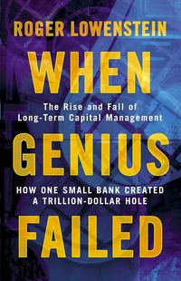

When Genius Failed
Roger Lowenstein fine read 2026
Sizing and governance, not the model. Ranked below The Man Who Solved the Market.

Write-up
The thesis in a sentence
A group of demonstrably brilliant people built a fund on models that were right about the distribution for years, and destroyed it by sizing and financing those models as though they could not be wrong.
What I took from it
It comes down to sizing. They put everything in one basket and were structured so that one large position going against them — the swaps, or equity vol — would take the fund down. Huge concentration combined with huge leverage was the mechanism. Not a bad model; a good model held at a size that left no room for it to be temporarily wrong.
If I had to rank the three failures: governance, then model, then leverage. The model did fail, and it handed them a number for their risk that was suspiciously low. But it was the people who chose to trust that number without auditing it. A more conservative, more suspicious governance layer would have positioned the fund to survive an apocalyptic scenario, and the same model would then have been survivable. That ordering is the part of the book I keep coming back to, because it puts the fixable failure in the place I have most control over.
The best investor is the one who positions himself for the bad times.
Intelligence was the mechanism, not an irrelevance. They were successful largely because they were clever. What killed them was that being right for years gave them a false sense of security — their egos inflated until they were blind to the possibility of things going against them. A very stupid person with a large ego would have made the same mistakes. The intelligence was real; what was missing was anything that kept them in check.
They missed the regime, not the distribution. For a long time they were right about convergence and roughly right about independence. What they had no answer for was a change of regime — a world where the historical relationships stop describing the present. Seeing how a basket of trades behaves under different regimes, and being able to restructure accordingly, is a real piece of engineering and the most directly useful idea I got out of this.
Being right on a horizon you cannot finance is not being right. LTCM's positions largely converged after the fund was dead. I like to treat a trade as an isolated thing: you can be right about the principle, the direction and the horizon and still fail, because you became insolvent before the horizon arrived. A trade can be perfectly rational and completely unreasonable at the same time. Flipping a coin to triple everything I own is positive expected value and I should still never take it.
Being a known position is a continuous variable, not a fact. The more desks that could see their book, the more the collapse was about crowding rather than about maths — and it compounded itself.
Where I disagree, and where it is weak
Too much personality and too little accountability. I wanted more balance sheet. The book is very good on who these people were and comparatively thin on the limits they set themselves and the limits they should have set — which, given that the argument of the book is that the limits were the problem, is the wrong place to be thin.
Every system has to be designed on the certainty that it will fail at some point, and with measures ready for when it does. LTCM had no regulation, no self-accountability, just very confident and very capable people doing exceptionally well until they weren't. I would have taken fifty pages of personality in exchange for a proper account of that.
On Lowenstein's use of the Nobel laureates and Black–Scholes: I think it is fair. It is obviously a hook, but he does show that the academics were not the main characters in the fund's decisions — and that they were being used as a hook for investors at the time too, which makes the framing part of the story rather than an imposition on it.
What I would actually change
Honestly, less than the length of this write-up suggests. I already knew the derivatives and the convergence trading, so it taught me a story rather than mechanics — a better picture of something I could already describe. The thing that survives as a change is the ordering: governance above model above leverage, and a standing suspicion of any risk number that comes out suspiciously low.
The other honest note is that diversification is not safety when the things I hold are heavily correlated, which has been true of me more than once.
Who it is for
Someone who likes the intersection of quantitative finance, academia and history. It is a pleasure read with a few genuinely valuable lessons to extract if you invest at all and want to learn from a spectacular success that turned into a spectacular failure. Not worth the time for someone who does not care about markets.
I have it below The Man Who Solved the Market, though I should be honest that my memory of that one is now faint enough that the comparison is doing less work than it looks like it is.